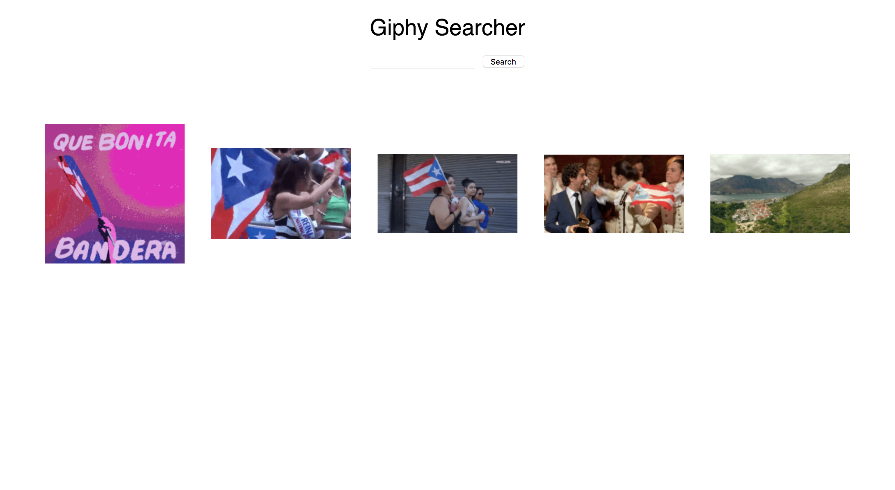
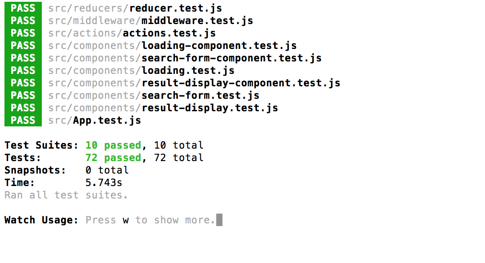
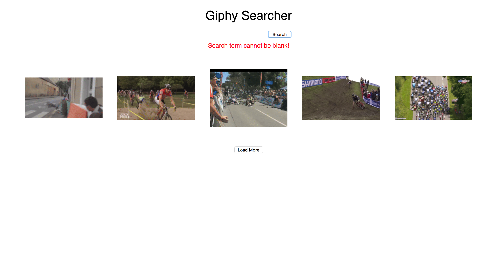
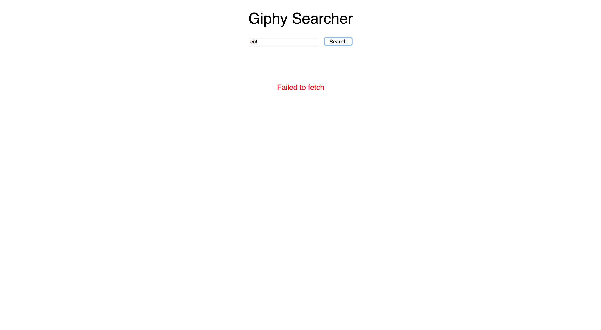
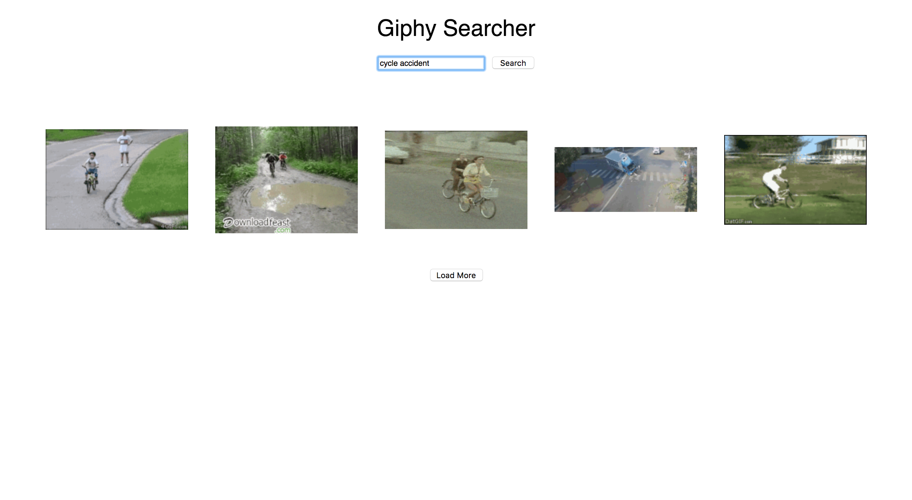

<div id="ajax-page" class="ajax-page-content">
    <div class="ajax-page-wrapper">
        <div class="ajax-page-nav">
            <div class="nav-item ajax-page-prev-next">
                <a class="ajax-page-load" href="portfolio-3.html">
                    <i class="zmdi zmdi-chevron-left"></i>
                </a>
                <a class="ajax-page-load" href="portfolio-5.html">
                    <i class="zmdi zmdi-chevron-right"></i>
                </a>
            </div>
            <div class="nav-item ajax-page-close-button">
                <a id="ajax-page-close-button" href="#">
                    <i class="zmdi zmdi-close"></i>
                </a>
            </div>
        </div>

        <div class="ajax-page-title">
            <h1>Giphy Searcher in React/Redux</h1>
        </div>

        <div class="row">
            <div class="col-sm-7 col-md-7 portfolio-block">
                <div class="owl-carousel portfolio-page-carousel">
                    <div class="item">
                        
                    </div>
                    <div class="item">
                        
                    </div>
                    <div class="item">
                        
                    </div>
                    <div class="item">
                        
                    </div>
                    <div class="item">
                        
                    </div>
                </div>


                <!--
                <div class="portfolio-page-image">
                    
                </div>
                -->

                <script type="text/javascript">
                    jQuery(document).ready(function ($) {

                        $('.portfolio-page-carousel').owlCarousel({
                            smartSpeed: 1200,
                            items: 1,
                            loop: true,
                            dots: true,
                            nav: true,
                            navText: false,
                            margin: 10
                        });

                    });
                </script>
            </div>

            <div class="col-sm-5 col-md-5 portfolio-block">
                <!-- Project Description -->
                <div class="block-title">
                    <h3>Description</h3>
                </div>
                <ul class="project-general-info">
                    <li>
                        <p>
                            <i class="fa fa-globe"></i>
                            <a href="http://martinbryant.dev/giphy-searcher-react" target="_blank">Giphy Searcher in
                                React/Redux</a>
                        </p>
                    </li>
                    <li>
                        <p>
                            <i class="fa fa-github"></i>
                            <a href="https://github.com/martinbryant/giphy-searcher-react" target="_blank">Github
                                Repo</a>
                        </p>
                    </li>
                    <li>
                        <p>
                            <i class="fa fa-calendar"></i> 10 June 2018
                        </p>
                    </li>
                </ul>
                <h3>Project Brief</h3>
                <p class="text-justify">Inspired by
                    <a href="https://medium.com/@GarrettLevine/5-projects-to-complete-when-starting-to-learn-front-end-web-development-48e8a1ce3178#3476"
                        target="_blank">5 Projects To Complete When Starting to Learn Front-End Web Development</a>
                </p>
                <p class="text-justify">Once you have the hang of DOM manipulation and working with vanilla JavaScript
                    or jQuery, I recommend you
                    start learning to template data and show it on the DOM. My horribly designed Giphy web app. You can
                    do
                    better, or use a CSS framework. An excellent beginning application to build is a basic re-creation
                    of
                    the the giphy website, using the giphy api itself. I recommend their API for beginners because there
                    is no need to request any kind of API key, and you won’t have to worry about much configuration when
                    trying to request data.</p>

                <p class="text-justify">Using their API you are able to build a small web app which does the following;
                    displays trending gifs on
                    app load shown in a column/grid has an input which allows you to search for specific gifs at the
                    bottom
                    of the results, there is a ‘load more’ button, which gets more gifs using that search term.</p>

                <p class="text-justify">You’ll hit a lot of new challenges in this project, one of which will be working
                    with asynchronous requests.
                    You can choose to use vanilla JavaScript for this challenge, or if you’re more comfortable with
                    jQuery
                    use the it’s ajax method. The goal is to begin working with asynchronous code.</p>

                <h3>Challenges</h3>
                <ul>
                    <li>Attempting TDD for the first time to complete this version</li>
                    <li>Using Redux Middleware to validation the search term and make API calls</li>
                    <li>I broke my wrist on 26 March 2018 and had surgery 2 weeks later</li>

                </ul>
                <h3>Takeaways</h3>
                <ul>
                    <li>I feel more confident in using TDD going forward</li>
                    <li>Using TDD helped when it came to debugging the application</li>
                    <li>I have a much better understanding of using Redux middleware</li>
                </ul>
                <!-- /Project Description -->

                <!-- Technology -->
                <div class="tags-block">
                    <div class="block-title">
                        <h3>Technology</h3>
                    </div>
                    <ul class="tags">
                        <li>
                            <a>React</a>
                        </li>
                        <li>
                            <a>Redux</a>
                        </li>
                        <li>
                            <a>Jest/Enzyme</a>
                        </li>
                        <li>
                            <a>Html</a>
                        </li>
                        <li>
                            <a>CSS</a>
                        </li>
                        <li>
                            <a>Ajax</a>
                        </li>
                    </ul>
                </div>
                <!-- /Technology -->


            </div>
        </div>
    </div>
</div>